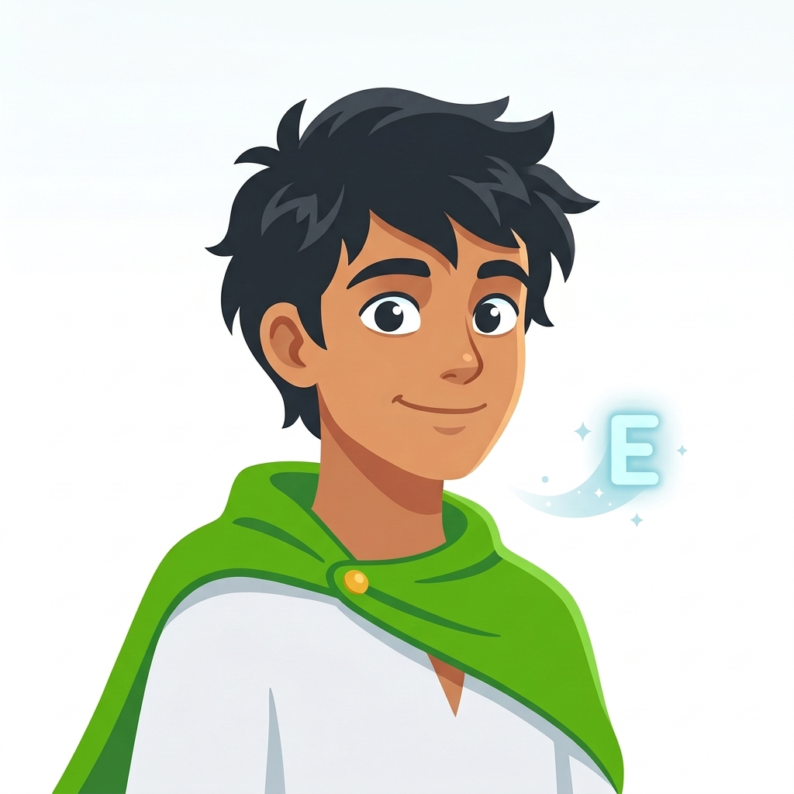

ספיקי מדבר עם הילד שלכם בצורה טבעית, שיחות קלילות וכיפיות, בלי שזה מרגיש כמו שיעור לימוד.
ספיקי מדבר עברית כבסיס על מנת לתת לילד הבנה ובטחון, ומשלב אנגלית בצורה מדורגת ככל שהילד מרגיש יותר בנוח בשיחה.

שיחה אמיתית, שבונה כישורי שפה שעובדים בעולם האמיתי.
בלי תרגילים ובלי שינון. אנגלית נספגת מתוך שיחה אמיתית, בדיוק כמו שלומדים שפה בחיים.
אפשר לדבר עם ספיקי מתי שרוצים. מהמחשב, מהטאבלט או מהפלאפון, בבית או בדרך.
ספיקי מתאים את השפה והקצב לרמה של הילד שלכם, גמיש וקשוב לצרכיו ממש כמו מורה אמיתי. אפשר לבחור רמה מותאמת אישית החל מכיתה א׳ ועד בוגר.
קל להתחבר לספיקי, וכפועל יוצא מכך להנות ולרצות להמשיך לדבר איתו עוד ועוד.
לצד השיחות, מעטפת החוויה שמה דגש על אופי משחקי, פרסים, דמויות והרפתקה מתמשכת שמייצרת רצון אצל הילד להמשיך ולתרגל אנגלית לאורך זמן.
3 דקות בלי הרשמה מסובכת
לוחצים על הכפתור "התחילו לדבר אנגלית עם ספיקי" למטה, יוצרים חשבון עם גוגל ובוחרים את הרמה הרצויה בהתאם לגיל הילד. אין התחייבות, תראו קודם שהילד שלכם מקבל ערך ונהנה ללמוד אנגלית.
הילד מדבר עם ספיקי על כל נושא בעולם, מתחיל מעברית, בהדרגה ספיקי מלמד אותו לומר באנגלית את המשפטים שמעניינים אותו, ולבנות שיחה. אפשר גם לבחור נושאים מראש, ולתרגל בצורה יותר ממוקדת עליהם.
כל שיחה נבנית על הקודמת. ספיקי זוכר, מתקדם עם הילד, בונה איתו הצלחות, ומרגיש כמו חבר. הילד נהנה מהמשחק והאנגלית שלו נבנית ומשתפרת כל הזמן.
ללא התחייבות, הילד שלכם יכול להתחיל לדבר עם ספיקי עכשיו.
התחילו לדבר אנגלית עם ספיקי